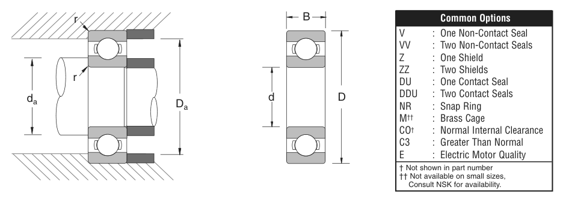

Original catalogue drawing - NSK catalogue, page 21

Scanned from the manufacturer catalogue page listing this part number. All part numbers printed on that table share the same drawing.
Scale cross-section
Blue = inner / outer ring, yellow = rolling element. Drawn to scale from this part's own
dimensions for selection reference only - not a manufacturing or assembly drawing.
Dimension table (mm / inch)
Symbol
Dimension
mm
inch
d
Bore diameter
35
1.378
D
Outside diameter
47
1.8504
B
Inner-ring / bearing width
7
0.2756
r
Chamfer (min)
0.305
0.012
Notes
Weights are given in kg. Load ratings are shown in both the original catalogue units and the converted value (1 N = 0.2248 lbf). Data is provided for selection reference only - confirm against the latest official catalogue before ordering.
Main dimensions
Bore d (mm)
35
Bore d (in)
1.3780
Outside dia. D (mm)
47
Outside dia. D (in)
1.8504
Width B (mm)
7
Width B (in)
0.2756
Load ratings & speeds
Basic dynamic load rating Cr (lbs)
1070
Basic static load rating Cor (lbs)
880
Limiting speed - grease (rpm)
13,000
Limiting speed - oil (rpm)
16,000
Factor f0
16.7
Weight
Weight (kg)
0.027
Mounting dimensions (fillets / shoulders)
Chamfer r (in)
0.012
Shaft shoulder da min (in)
1.457
Shaft shoulder da max (in)
1.457
Housing shoulder Da max (in)
1.772
Bearing life (ISO 281 basic rating life)
C / P
Equivalent load P (N)
L10 (106 rev)
L10h at 3,000 rpm
4
1,190
64
356
6
793
216
1,200
8
595
512
2,844
10
476
1,000
5,556
15
317
3,375
18,750
Basic rating life per ISO 281: L10 = (C/P)3 with C = 4,760 N. Hours = L10 x 106 / (60n). Life-modification factors for lubrication, contamination and temperature (aISO) are not included.
Source & traceability
Brand
NSK
Source catalogue
NSK inch product catalogue
Catalogue page
p.23 (dimensions) / p.24 (ratings)
Dimensions in inches and millimetres, load ratings in lbs.
Send us the quantity you need and we will come back with price and
lead time, normally within 24 hours. Equivalent parts from other brands can be quoted at the same time.